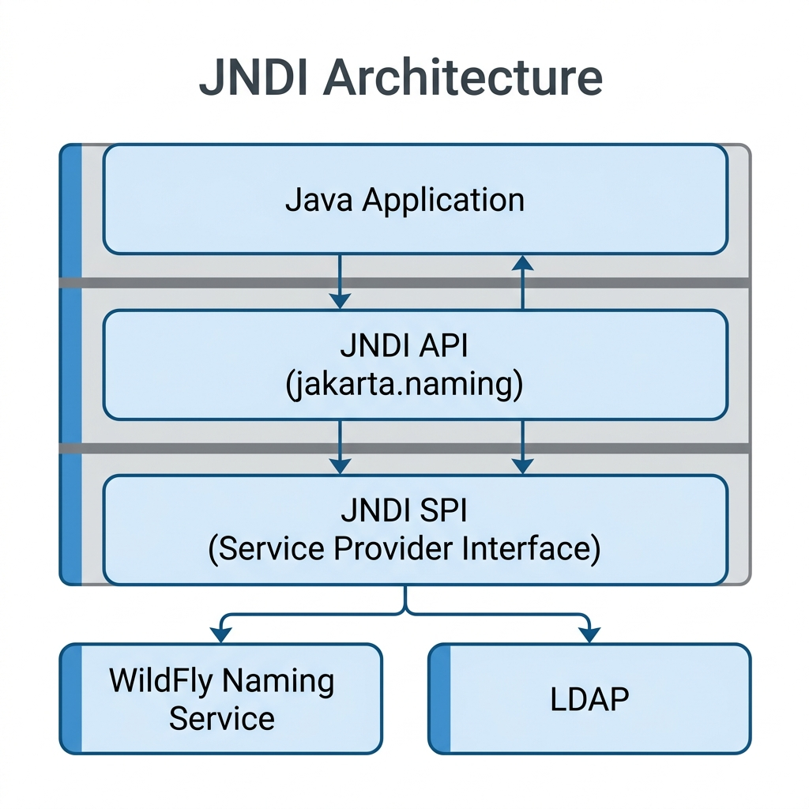
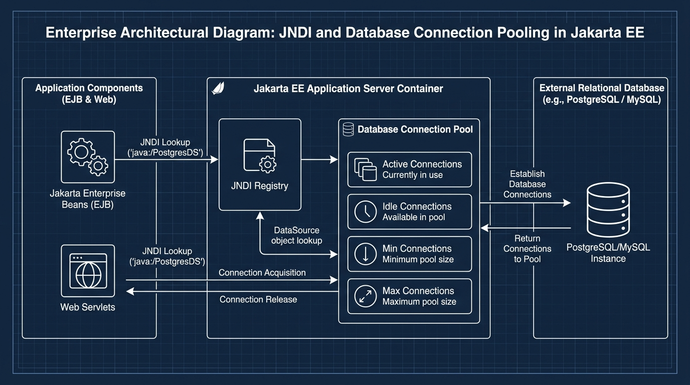

<title>Session 3 — Resource Creation in Jakarta Enterprise Beans</title>
<meta name="viewport" content="width=device-width, initial-scale=1">
<meta name="description" content="Session 3: What resources are in Jakarta EE, JNDI naming service, java:global/module/app namespaces, DataSource connection pools, and administrative deployment descriptors.">
<link rel="stylesheet" href="assets/css/styles.css">
<script>window.PAGE = "s03";</script>

<main class="page">

  <h1>Session 3 · Resource Creation in Jakarta Enterprise Beans</h1>
  <p class="lede">Your enterprise beans must never hardcode machine addresses, credentials, or create raw
    database connections directly. Instead, they look up managed <strong>resources</strong> by name. The
    registry is <strong>JNDI</strong>, and the primary workhorse is the <strong>DataSource</strong> backed by a
    high-speed <strong>connection pool</strong>.</p>

  <div class="callout callout--key"><span class="callout__i">🎯</span>
    <div class="callout__b"><b>Learning Objectives (from the Presenter's Manual)</b>
      <ol style="margin:.6rem 0 0;padding-left:1.2rem">
        <li>Define what a "Resource" is in Jakarta EE and explain how JNDI provides naming services</li>
        <li>Explain the three standard JNDI namespaces: <code>java:global</code>, <code>java:module</code>, and <code>java:app</code></li>
        <li>Describe what a <code>DataSource</code> is and how database connection pooling keeps applications fast</li>
        <li>Explain how resources are created and registered administratively in WildFly (Admin Console, CLI, and descriptors)</li>
      </ol>
    </div>
  </div>

  <!-- =====================================================================
       3.1 What is a Resource?
       ===================================================================== -->
  <span class="eyebrow">session 3.1</span>
  <h2>Part 1 · What is a Resource in Jakarta EE?</h2>

  <div class="callout callout--analogy"><span class="callout__i">🏢</span>
    <div class="callout__b"><b>The Corporate Headquarters Analogy</b>
      Imagine a large bank headquarters with hundreds of staff (application components). Each staff member needs
      access to shared facilities:
      <ul style="margin:.4rem 0 0;padding-left:1.2rem">
        <li>The <strong>printer room</strong> (Database)</li>
        <li>The <strong>mailroom</strong> (Message Queue)</li>
        <li>The <strong>meeting rooms</strong> (Connection Pool)</li>
      </ul>
      If every staff member had to track down the physical room numbers and build their own telephone wires, the
      office would grind to a halt. Instead, the company posts a central <strong>building directory</strong> on
      the wall: <em>"Printer → Room 301. Mailroom → Basement B2."</em><br>
      In Jakarta EE, that central directory is called <strong>JNDI (Java Naming and Directory Interface)</strong>.
    </div>
  </div>

  <p>In Jakarta EE, a <strong>Resource</strong> is any external service or object that an application component
    (such as a Stateless Session Bean or Servlet) requires to perform its work:</p>

  <div class="tablewrap"><table>
    <thead><tr><th>Resource Type</th><th>Jakarta EE Abstraction</th><th>Typical Provider</th></tr></thead>
    <tbody>
      <tr><td><strong>Database connection</strong></td><td><code>javax.sql.DataSource</code></td><td>PostgreSQL, MySQL, Oracle</td></tr>
      <tr><td><strong>Messaging destination</strong></td><td><code>jakarta.jms.Queue</code> / <code>Topic</code></td><td>ActiveMQ Artemis (in WildFly)</td></tr>
      <tr><td><strong>Messaging factory</strong></td><td><code>jakarta.jms.ConnectionFactory</code></td><td>JMS Messaging provider</td></tr>
      <tr><td><strong>Mail session</strong></td><td><code>jakarta.mail.Session</code></td><td>SMTP Server</td></tr>
      <tr><td><strong>Configurable values</strong></td><td>Environment entries (<code>&lt;env-entry&gt;</code>)</td><td>Application descriptor</td></tr>
    </tbody>
  </table></div>

  <!-- =====================================================================
       3.2 JNDI Architecture & Namespaces
       ===================================================================== -->
  <span class="eyebrow">session 3.2</span>
  <h2>Part 2 · JNDI: The Address Book of Jakarta EE</h2>

  <p><strong>JNDI (Java Naming and Directory Interface)</strong> is the built-in naming specification in Jakarta EE.
    It acts as a <strong>central phone directory</strong> that maps readable names to live objects living inside
    the application server.</p>

  <div class="tablewrap"><table>
    <thead><tr><th>JNDI Name (The "Phone Number")</th><th>Registered Object (The "Person")</th></tr></thead>
    <tbody>
      <tr><td><code>java:global/GlobalBankApp/AccountEJB/AccountBean!com.globalbank.AccountRemote</code></td><td>Live <code>AccountBean</code> EJB reference</td></tr>
      <tr><td><code>java:/jdbc/GlobalBankDB</code></td><td>Pre-configured PostgreSQL <code>DataSource</code></td></tr>
      <tr><td><code>java:jboss/exported/jms/TransactionQueue</code></td><td>JMS Message Queue</td></tr>
    </tbody>
  </table></div>

  <h3>JNDI Architecture: API vs. SPI</h3>
  <p>JNDI is split strictly into two layers so your application remains 100% portable:</p>

  <figure>
    
    <figcaption><b>Key Takeaway:</b> Your code calls only the top layer (<code>javax.naming</code> API). The server vendor provides the lower layer (SPI). Switching from WildFly to WebLogic or GlassFish requires zero code changes to your JNDI lookups.</figcaption>
  </figure>

  <div class="callout callout--mistake"><span class="callout__i">⚠️</span>
    <div class="callout__b"><b>Critical Gotcha: Package Name Stays <code>javax.naming</code></b>
      When Oracle donated Java EE to the Eclipse Foundation to become Jakarta EE, APIs in the standard Java SE JDK
      were <strong>not renamed</strong>. Because JNDI is part of the core Java SE platform runtime, its classes remain
      in <code>javax.naming.InitialContext</code> and <code>javax.naming.NamingException</code>.<br>
      <strong>There is NO <code>jakarta.naming</code> package!</strong> Attempting to import <code>jakarta.naming.*</code> will cause compilation failure.
    </div>
  </div>

  <h3>The Three Standard JNDI Namespaces</h3>
  <p>JNDI organizes names into scopes, just like directory folders or department phone extensions:</p>

  <div class="tablewrap"><table>
    <thead><tr><th>Namespace</th><th>Scope</th><th>Syntax / Pattern</th><th>Who Can Access It?</th></tr></thead>
    <tbody>
      <tr>
        <td><code>java:global</code></td>
        <td>Server-wide</td>
        <td><code>java:global[/appName]/moduleName/beanName[!interface]</code></td>
        <td><strong>Any</strong> application, module, or standalone remote client connected to the server.</td>
      </tr>
      <tr>
        <td><code>java:app</code></td>
        <td>Application-wide</td>
        <td><code>java:app[/moduleName]/beanName[!interface]</code></td>
        <td>Any EJB or WAR module packaged inside the <strong>same EAR application</strong>.</td>
      </tr>
      <tr>
        <td><code>java:module</code></td>
        <td>Module-only</td>
        <td><code>java:module/beanName[!interface]</code></td>
        <td>Only components packaged inside the <strong>exact same JAR or WAR</strong>.</td>
      </tr>
    </tbody>
  </table></div>

  <details class="deep-dive">
    <summary>Deep Dive: Breaking down a full JNDI lookup string</summary>
    <div class="code-head">Deconstructing a Global JNDI Lookup Name</div>
    <pre><code>java:global/GlobalBankApp/AccountEJB/AccountBean!com.globalbank.AccountRemote
│            │             │          │           └─ Fully qualified interface name
│            │             │          └───────────── Bean implementation class name
│            │             └──────────────────────── EJB JAR module name
│            └────────────────────────────────────── Deployed EAR package name
└─────────────────────────────────────────────────── Global namespace prefix</code></pre>
  </details>

  <h3>Working with JNDI: <code>InitialContext</code> and <code>Context</code></h3>
  <p>To interact with JNDI programmatically, you obtain an <code>InitialContext</code> — your gateway into the directory tree:</p>

  <div class="code-head">Manual JNDI Lookup (Traditional Approach)</div>
  <pre><code>import javax.naming.Context;
import javax.naming.InitialContext;
import javax.naming.NamingException;

public class ClientService {
    public void queryAccount() {
        try {
            // 1. Connect to the server's JNDI naming service
            Context ctx = new InitialContext();

            // 2. Look up the registered object by its portable JNDI name
            AccountRemote account = (AccountRemote) ctx.lookup(
                "java:global/GlobalBankApp/AccountEJB/AccountBean!com.globalbank.AccountRemote"
            );

            // 3. Invoke business methods on the returned EJB stub
            double bal = account.getBalance(1001);
            System.out.println("Account balance: $" + bal);

        } catch (NamingException e) {
            System.err.println("JNDI Lookup failed: " + e.getMessage());
        }
    }
}</code></pre>

  <div class="tablewrap"><table>
    <thead><tr><th>Context Method</th><th>Action Performed</th><th>Analogy</th></tr></thead>
    <tbody>
      <tr><td><code>ctx.lookup("name")</code></td><td>Retrieves the bound object from the directory</td><td>Looking up a phone number</td></tr>
      <tr><td><code>ctx.bind("name", obj)</code></td><td>Registers a new object under a name (fails if already bound)</td><td>Registering a new phone number</td></tr>
      <tr><td><code>ctx.rebind("name", obj)</code></td><td>Overwrites/updates an existing name mapping</td><td>Updating your phone number in the directory</td></tr>
      <tr><td><code>ctx.unbind("name")</code></td><td>Removes the name mapping</td><td>Removing an entry from the directory</td></tr>
    </tbody>
  </table></div>

  <div class="callout"><span class="callout__i">💡</span>
    <div class="callout__b"><b>Developer Note:</b> In day-to-day Jakarta EE development, the application server
      (WildFly) calls <code>bind()</code> and <code>unbind()</code> automatically upon application deployment and undeployment.
      As an application developer, you will almost exclusively call <code>lookup()</code> (or use <code>@Resource</code> injection).
    </div>
  </div>

  <!-- =====================================================================
       3.3 DataSource & Connection Pools
       ===================================================================== -->
  <span class="eyebrow">session 3.3</span>
  <h2>Part 3 · DataSource Objects &amp; Connection Pooling</h2>

  <h3>The Connection Problem: Physical Connections are Costly</h3>
  <p>Establishing a fresh TCP connection to a database requires a multi-step handshake, authentication, and session setup.
    This takes anywhere from <strong>150 ms to 1,500 ms</strong>. If 1,000 customers open the banking portal simultaneously,
    creating 1,000 physical connections on demand will cause connection exhaustion and crash the database server.</p>

  <p>The solution is <strong>Connection Pooling</strong>, managed through a <strong>DataSource</strong>.</p>

  <figure>
    
    <figcaption><b>Connection Pool Cycle:</b> The pool maintains a warm batch of connections (e.g., 5 to 20). When your code finishes executing SQL, closing the connection merely returns it to the pool in milliseconds.</figcaption>
  </figure>

  <h3>Configuring a DataSource in WildFly (Administrative)</h3>
  <p>In enterprise architectures, developers do not create connection pools in Java code. Administrators configure them
    at the server level.</p>

  <details class="deep-dive" open>
    <summary>Method A: WildFly Management CLI (Production &amp; Scripted)</summary>
    <pre><code># Connect to WildFly management terminal
$WILDFLY_HOME/bin/jboss-cli.sh --connect

# Add the PostgreSQL DataSource with pool bounds
/subsystem=datasources/data-source=GlobalBankDS:add( \
    jndi-name="java:/jdbc/GlobalBankDB", \
    driver-name="postgresql", \
    connection-url="jdbc:postgresql://localhost:5432/globalbank", \
    user-name="bank_admin", \
    password="SecretPassword123", \
    min-pool-size=5, \
    max-pool-size=25, \
    pool-prefill=true \
)

# Reload the server configuration
reload</code></pre>
  </details>

  <details class="deep-dive">
    <summary>Method B: WildFly Web Admin Console (GUI)</summary>
    <ol>
      <li>Open your browser to <code>http://localhost:9990/console</code></li>
      <li>Navigate to <strong>Configuration → Subsystems → Datasources &amp; Drivers → Datasources</strong></li>
      <li>Click <strong>Add (+)</strong> and choose <strong>Non-XA Datasource</strong></li>
      <li>Set <strong>Name:</strong> <code>GlobalBankDS</code> and <strong>JNDI Name:</strong> <code>java:/jdbc/GlobalBankDB</code></li>
      <li>Select the PostgreSQL driver, provide database URL and credentials, and click <strong>Test Connection</strong></li>
      <li>Click <strong>Finish</strong> — WildFly immediately binds the pool into JNDI.</li>
    </ol>
  </details>

  <h3>Consuming the DataSource in an Enterprise Bean: <code>@Resource</code></h3>
  <p>The modern, clean way to obtain the DataSource is through container injection with <code>@Resource</code>.
    The container automatically performs the JNDI lookup behind the scenes before delivering your bean.</p>

  <div class="code-head">AccountBean.java — High-performance EJB using Pooled DataSource</div>
  <pre><code>package com.globalbank.ejb;

import jakarta.annotation.Resource;
import jakarta.ejb.Stateless;
import javax.sql.DataSource;
import java.sql.Connection;
import java.sql.PreparedStatement;
import java.sql.ResultSet;
import java.sql.SQLException;

@Stateless
public class AccountBean implements AccountRemote {

    // ① Ask the container to inject the pre-configured JNDI DataSource
    @Resource(lookup = "java:/jdbc/GlobalBankDB")
    private DataSource bankDataSource;

    @Override
    public double getBalance(int accountId) {
        String sql = "SELECT balance FROM accounts WHERE account_id = ?";

        // ② Try-with-resources: borrows a connection and returns it automatically
        try (Connection conn = bankDataSource.getConnection();
             PreparedStatement ps = conn.prepareStatement(sql)) {

            ps.setInt(1, accountId);

            try (ResultSet rs = ps.executeQuery()) {
                if (rs.next()) {
                    return rs.getDouble("balance");
                }
            }
            return 0.0; // Account not found

        } catch (SQLException e) {
            throw new RuntimeException("Database error retrieving balance", e);
        }
        // ③ NOTE: conn.close() DOES NOT terminate the physical connection!
        //    It instantly returns the connection back to the WildFly pool.
    }
}</code></pre>

  <!-- =====================================================================
       3.4 Administrative Resource Configuration in application.xml
       ===================================================================== -->
  <span class="eyebrow">session 3.4</span>
  <h2>Part 4 · Deployment Descriptors: <code>application.xml</code> &amp; <code>web.xml</code></h2>

  <p>Jakarta EE deployment descriptors allow developers to declare resource requirements declaratively without
    modifying Java source code when environments change (e.g., Development vs. QA vs. Production).</p>

  <div class="tablewrap"><table>
    <thead><tr><th>Descriptor Tag</th><th>Purpose</th><th>Typical Use Case</th></tr></thead>
    <tbody>
      <tr>
        <td><code>&lt;env-entry&gt;</code></td>
        <td>Declares simple configurable primitive/string values</td>
        <td>Tax rates, daily transfer limits, server file paths</td>
      </tr>
      <tr>
        <td><code>&lt;resource-ref&gt;</code></td>
        <td>Declares an external resource factory requiring authentication</td>
        <td>Database DataSources (<code>javax.sql.DataSource</code>)</td>
      </tr>
      <tr>
        <td><code>&lt;resource-env-ref&gt;</code></td>
        <td>Declares an unauthenticated resource reference (introduced in Servlet 2.4)</td>
        <td>JMS Queues, JMS Topics, Mail Sessions</td>
      </tr>
    </tbody>
  </table></div>

  <div class="code-head">META-INF/application.xml — Declarative Resource Declarations</div>
  <pre><code>&lt;?xml version="1.0" encoding="UTF-8"?&gt;
&lt;application xmlns="https://jakarta.ee/xml/ns/jakartaee" version="10"&gt;
    &lt;application-name&gt;GlobalBankApp&lt;/application-name&gt;

    &lt;!-- 1. Simple environment property --&gt;
    &lt;env-entry&gt;
        &lt;env-entry-name&gt;maxDailyTransfer&lt;/env-entry-name&gt;
        &lt;env-entry-type&gt;java.lang.Double&lt;/env-entry-type&gt;
        &lt;env-entry-value&gt;25000.00&lt;/env-entry-value&gt;
    &lt;/env-entry&gt;

    &lt;!-- 2. Reference to database factory --&gt;
    &lt;resource-ref&gt;
        &lt;res-ref-name&gt;jdbc/GlobalBankDB&lt;/res-ref-name&gt;
        &lt;res-type&gt;javax.sql.DataSource&lt;/res-type&gt;
        &lt;res-auth&gt;Container&lt;/res-auth&gt;
    &lt;/resource-ref&gt;

    &lt;!-- 3. Reference to messaging queue --&gt;
    &lt;resource-env-ref&gt;
        &lt;resource-env-ref-name&gt;jms/TransferQueue&lt;/resource-env-ref-name&gt;
        &lt;resource-env-ref-type&gt;jakarta.jms.Queue&lt;/resource-env-ref-type&gt;
    &lt;/resource-env-ref&gt;
&lt;/application&gt;</code></pre>

  <!-- =====================================================================
       Textbook Walkthrough Demo: Uppercase JNDI
       ===================================================================== -->
  <h3>Textbook Demo Walkthrough · JNDI UpperCase Converter</h3>
  <p>Here is the full 3-tier architecture demonstrating JNDI resolution between a web client (Servlet) and an EJB:</p>

  <div class="code-head">1. UpperCaseRemote.java — Remote Business Interface</div>
  <pre><code>package demo.jndi;

import jakarta.ejb.Remote;

@Remote
public interface UpperCaseRemote {
    StringBuffer sayHello();
}</code></pre>

  <div class="code-head">2. UpperCase.java — Stateless Session Bean with Mapped JNDI Name</div>
  <pre><code>package demo.jndi;

import jakarta.ejb.Stateless;
import jakarta.ejb.LocalBean;

@Stateless(mappedName = "Upper")
@LocalBean
public class UpperCase implements UpperCaseRemote {

    public UpperCase() {}

    @Override
    public StringBuffer sayHello() {
        String input = "hello jndi";
        StringBuffer buffer = new StringBuffer(input);

        for (int i = 0; i &lt; input.length(); i++) {
            char c = input.charAt(i);
            if (Character.isLowerCase(c)) {
                buffer.setCharAt(i, Character.toUpperCase(c));
            } else if (Character.isUpperCase(c)) {
                buffer.setCharAt(i, Character.toLowerCase(c));
            }
        }
        System.out.println("Processed in EJB: " + buffer);
        return buffer;
    }
}</code></pre>

  <div class="code-head">3. UppercaseDemo.java — Servlet Web Client performing JNDI Lookup</div>
  <pre><code>package uppercase.jndi;

import java.io.IOException;
import java.io.PrintWriter;
import javax.naming.InitialContext;
import javax.naming.NamingException;
import jakarta.servlet.ServletException;
import jakarta.servlet.annotation.WebServlet;
import jakarta.servlet.http.HttpServlet;
import jakarta.servlet.http.HttpServletRequest;
import jakarta.servlet.http.HttpServletResponse;
import demo.jndi.UpperCaseRemote;

@WebServlet("/UppercaseDemo")
public class UppercaseDemo extends HttpServlet {

    @Override
    protected void doGet(HttpServletRequest req, HttpServletResponse resp)
            throws ServletException, IOException {
        resp.setContentType("text/html");
        PrintWriter out = resp.getWriter();

        try {
            // Obtain JNDI Context and resolve EJB stub
            InitialContext ctx = new InitialContext();
            UpperCaseRemote bean = (UpperCaseRemote) ctx.lookup(
                "java:global/Uppercase/UppercaseBean/UpperCase!demo.jndi.UpperCaseRemote"
            );

            // Execute method and output to browser
            StringBuffer result = bean.sayHello();
            out.println("&lt;h2&gt;Result from EJB:&lt;/h2&gt; &lt;p&gt;" + result + "&lt;/p&gt;");

        } catch (NamingException e) {
            out.println("&lt;h3&gt;Naming error: " + e.getMessage() + "&lt;/h3&gt;");
            e.printStackTrace();
        }
    }
}</code></pre>

  <!-- Interactive Simulator Bench -->
  <div class="bench" data-run="canned">
    <div class="bench__head">
      <span class="dot"></span>
      <span class="kind">interactive simulation</span>
      <span class="mode">JNDI Lookup &amp; Execution Replay</span>
    </div>
    <pre class="bench__code"><code>// Client executes GET /UppercaseDemo
InitialContext ctx = new InitialContext();
UpperCaseRemote bean = (UpperCaseRemote) ctx.lookup("java:global/Uppercase/UppercaseBean/UpperCase!demo.jndi.UpperCaseRemote");
StringBuffer out = bean.sayHello();
System.out.println("Client received: " + out);</code></pre>
    <div class="bench__controls">
      <button class="btn-run" type="button">Run JNDI Execution</button>
      <span class="bench__hint">Simulates WildFly JNDI resolution, bean method invocation, and response return.</span>
    </div>
    <script type="text/plain" class="bench__canned">
[07:15:02,110 INFO] [javax.naming.InitialContext] Connecting to WildFly Naming Service (port 1099)... Connected.
[07:15:02,118 INFO] [JNDI SPI] Resolving 'java:global/Uppercase/UppercaseBean/UpperCase!demo.jndi.UpperCaseRemote'
[07:15:02,125 INFO] [JNDI SPI] Binding found -> Proxy instance created for EJB UpperCase [StatelessPool #3]
[07:15:02,131 INFO] [EJB Container] Invoking UpperCase.sayHello() on bean instance...
[07:15:02,133 INFO] [EJB Log] Processed in EJB: HELLO JNDI
[07:15:02,135 INFO] [Servlet Response] Status: 200 OK | Payload: "HELLO JNDI" | Total latency: 25ms
    </script>
    <pre class="bench__out" aria-live="polite"></pre>
  </div>

  <!-- =====================================================================
       Knowledge Check Quiz
       ===================================================================== -->
  <span class="eyebrow">check yourself</span>
  <section class="quiz" data-quiz>
    <h3>Session 3 · Knowledge Check</h3>
    <script type="application/json">
    [
      {
        "q": "What package do the core JNDI classes (InitialContext, NamingException) belong to?",
        "opts": [
          "jakarta.naming",
          "javax.naming",
          "jakarta.ejb.naming",
          "java.jndi"
        ],
        "a": 1,
        "why": "JNDI is part of the core Java SE platform and was not renamed during the Jakarta EE transition. It is javax.naming; jakarta.naming does not exist."
      },
      {
        "q": "Which JNDI namespace allows access to a bean from any client anywhere on the server?",
        "opts": [
          "java:module",
          "java:app",
          "java:global",
          "java:comp"
        ],
        "a": 2,
        "why": "java:global is the widest namespace, accessible to any application, module, or standalone client on the server."
      },
      {
        "q": "Why should enterprise applications use a DataSource instead of DriverManager.getConnection()?",
        "opts": [
          "DriverManager only works with SQLite",
          "A DataSource is backed by a connection pool, reusing existing TCP connections in milliseconds instead of renegotiating every time",
          "DataSources encrypt the database tables",
          "DriverManager cannot run SELECT statements"
        ],
        "a": 1,
        "why": "Creating physical connections takes 200ms–2000ms. A DataSource with a connection pool loans warm connections instantly and reclaims them upon close()."
      },
      {
        "q": "In an EJB, what is the cleanest and most common way to acquire a configured DataSource?",
        "opts": [
          "Calling new DataSource()",
          "Using @Resource(lookup = \"java:/jdbc/DBName\") on a private DataSource field",
          "Hardcoding the database username and password in the constructor",
          "Reading from a local text file"
        ],
        "a": 1,
        "why": "@Resource tells the container to inject the DataSource from JNDI automatically at initialization."
      },
      {
        "q": "In application.xml, which element is used to define simple configurable values like max transfer limits?",
        "opts": [
          "<resource-ref>",
          "<resource-env-ref>",
          "<env-entry>",
          "<data-source>"
        ],
        "a": 2,
        "why": "<env-entry> is designed for simple environment values (strings, numbers) that can be changed without modifying or recompiling code."
      }
    ]
    </script>
  </section>

  <!-- =====================================================================
       Summary
       ===================================================================== -->
  <span class="eyebrow">recap</span>
  <h2>One-Line Summary</h2>
  <div class="tablewrap summary"><table><tbody>
    <tr><td><strong>Resource</strong></td><td>An external service (DB, Queue, Mail) provided by the server environment.</td></tr>
    <tr><td><strong>JNDI</strong></td><td>The centralized address book mapping names to resources; uses <code>javax.naming</code>.</td></tr>
    <tr><td><strong>Namespaces</strong></td><td><code>java:global</code> (server-wide), <code>java:app</code> (EAR-wide), <code>java:module</code> (JAR/WAR only).</td></tr>
    <tr><td><strong>DataSource</strong></td><td>Factory for pooled database connections; loans connections and reclaims them on <code>close()</code>.</td></tr>
    <tr><td><strong><code>@Resource</code></strong></td><td>Container-managed injection annotation that performs JNDI resolution automatically.</td></tr>
  </tbody></table></div>

</main>

<script src="assets/js/course.js"></script>
<script src="assets/js/runner.js"></script>
